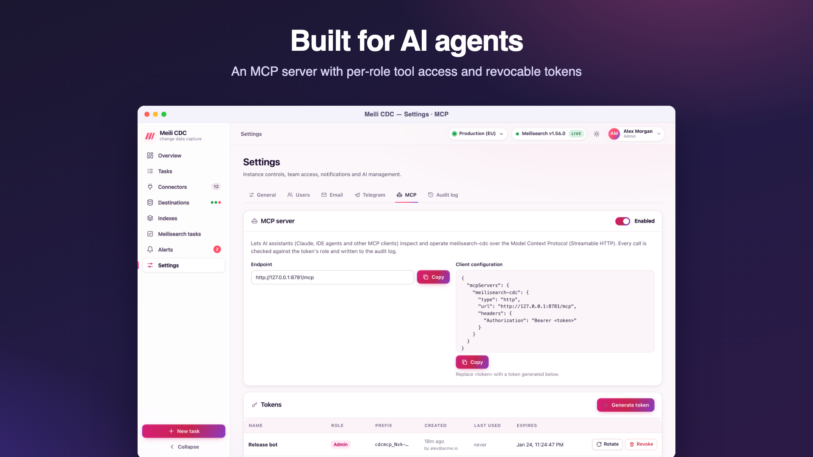

AI agents (MCP)
meilisearch-cdc includes a Model Context Protocol server, so AI assistants and IDE agents can inspect and operate your pipelines with tokens you control, limited to what each role may do.

Enable the endpoint
In Settings → MCP (admin), turn the server on. It speaks MCP's Streamable HTTP transport at /mcp on the service's address, for example https://cdc.example.com/mcp. While disabled, /mcp answers 404. Disabling keeps tokens and the policy; meilisearch-cdc admin mcp disable does the same from the server.
Tokens
Every client authenticates with its own bearer token: Authorization: Bearer cdcmcp_….
- Generate token: a name (where it is used, such as "Claude Desktop (ops)"), a role (
viewer,moderatororadmin) and an expiry (never, 7, 30 or 90 days in the dashboard; any duration such as"720h"through the API). - The token is shown once, together with a ready-to-paste client configuration. Only a hash is stored; the list shows its prefix (
cdcmcp_ab12), creator, last use and expiry. - Rotate issues a new token with the same name, role and lifetime; the old one stops working at once.
- Revoke deletes it. Revocation, expiry and policy changes apply to the very next call, even in an open session.
meilisearch-cdc admin mcp revoke-tokensrevokes them all from the server.
Client configuration
Generic Streamable HTTP clients
This is the snippet the dashboard shows when a token is created; most MCP clients that support remote HTTP servers accept this shape:
{
"mcpServers": {
"meilisearch-cdc": {
"type": "http",
"url": "https://cdc.example.com/mcp",
"headers": {
"Authorization": "Bearer cdcmcp_…"
}
}
}
}Claude Code
claude mcp add --transport http meilisearch-cdc https://cdc.example.com/mcp \
--header "Authorization: Bearer cdcmcp_…"Claude Desktop
Claude Desktop's configuration file starts local (stdio) servers. Bridge to the remote endpoint with the mcp-remote package (needs Node.js), in claude_desktop_config.json:
{
"mcpServers": {
"meilisearch-cdc": {
"command": "npx",
"args": ["-y", "mcp-remote", "https://cdc.example.com/mcp",
"--header", "Authorization: Bearer ${CDC_MCP_TOKEN}"],
"env": { "CDC_MCP_TOKEN": "cdcmcp_…" }
}
}
}Clients must reach the endpoint over HTTPS in production; see Reverse proxy and TLS (the /mcp path should not be buffered).
Tools
The minimum role is the default grant; the policy can change it. Mutating tools are marked as such to clients (destructive hint) and every successful mutating call is written to the audit log as mcp.<tool> with its arguments.
| Tool | Min. role | Mutating | What it does |
|---|---|---|---|
overview | viewer | no | Summary of all tasks, throughput and the Meilisearch instance. |
list_tasks | viewer | no | CDC tasks with their live status (secrets redacted). |
get_task | viewer | no | A task definition and its live status, counters, lag and checkpoint. |
get_task_logs | viewer | no | Recent activity log of a task, newest last. |
schema_check | viewer | no | Compare source columns, index fields and index settings; lists issues. |
get_diff | viewer | no | The last document diff between source and index. |
list_dlq | viewer | no | Documents Meilisearch rejected for a task. |
list_destinations | viewer | no | Meilisearch instances with health, last sync and the tasks writing to them. |
list_indexes | viewer | no | Indexes with document counts and the tasks writing them. |
get_index | viewer | no | Index primary key, stats and field distribution. |
search_index | viewer | no | Run a Meilisearch search to verify synced data. |
get_index_settings | viewer | no | Current Meilisearch settings of an index. |
preview_index_settings | viewer | no | Which settings would change, without applying them. |
list_meili_tasks | viewer | no | Recent Meilisearch tasks (custom metadata cdc:<task> marks CDC writes). |
list_alert_rules | viewer | no | Alert rules and their channels. |
list_alert_events | viewer | no | Recent alert events, newest first. |
task_action | moderator | yes | Start, stop, pause, resume, restart, resync or reset the checkpoint of a task. |
batch_task_action | moderator | yes | Apply a lifecycle action to several tasks. |
test_connection | moderator | no | Connect with a task definition, read its schema and sample documents. |
run_diff | moderator | yes | Start a document diff (and optional repair); poll get_diff. |
replay_dlq | moderator | yes | Resend rejected documents to Meilisearch. |
create_task | admin | yes | Create a task from a definition (see the cdc://docs/api resource). |
update_task | admin | yes | Replace a task definition; running tasks restart. |
delete_task | admin | yes | Delete a task, optionally with its source resources and index. |
update_index_settings | admin | yes | Apply Meilisearch settings to an index and wait for the task. |
create_alert_rule | admin | yes | Create an alert rule with email, Telegram or webhook channels. |
delete_alert_rule | admin | yes | Delete an alert rule. |
Index tools accept an optional destination argument (the default destination when omitted).
Resources
| URI | Content |
|---|---|
cdc://overview | Tasks by state, throughput and Meilisearch health. |
cdc://tasks | Every task with its status. |
cdc://tasks/{id} | One task with its status. |
cdc://tasks/{id}/logs | Recent activity of a task. |
cdc://indexes | Indexes of the default Meilisearch destination. |
cdc://destinations | Destinations with health and synced tasks. |
cdc://alerts/active | Alerts currently firing. |
cdc://docs/api | The REST API and the task and rule JSON formats, for agents that create tasks. |
Access policy
The policy grants each role a list of tools and resources. By default every role gets the tools whose minimum role it meets and every resource. Admins can tick or untick tools and resources per role in the MCP tab, and Reset to defaults restores the default grants. A session sees only the tools and resources its token's role is granted, and every call is checked again against the current policy.
Grant carefully
The policy is the check MCP calls go through: granting an admin tool such as delete_task to the viewer role lets viewer tokens use it. Keep mutating tools on roles whose tokens you would trust with them.
Audit
Mutating calls appear in Settings → Audit log as mcp.task_action, mcp.create_task, … with the token's name (mcp:<name>) and up to 500 characters of the arguments. Token creation, rotation, revocation and policy changes are recorded like any other admin write.